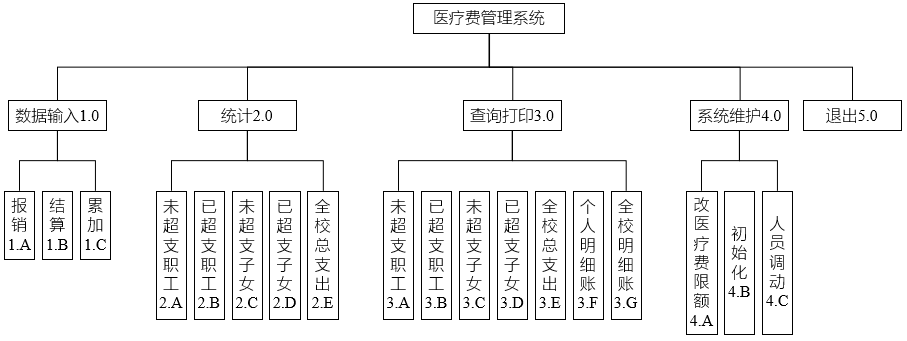
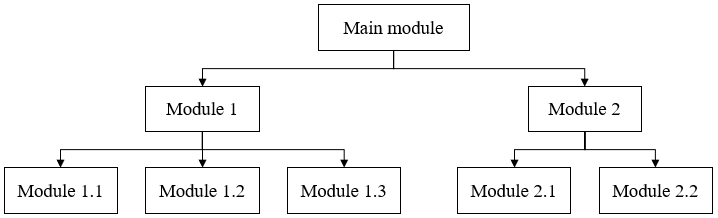

H 图：聚焦系统；强调层级划分
IPO 图：聚焦模块内部的功能定义
HIPO 图：聚焦系统和模块；强调的是功能的分解


| Input | Process | Output |
|---|---|---|
| 1. 用户输入的账号 | 1. 检查账号格式是否正确（非空、长度） | 1. 验证结果（成功/失败） |
| 2. 用户输入的密码 | 2. 从数据库中读取该账号对应的正确密码 | 2. 错误提示信息（如果有）。 |
| 3. 调用 Module 1.1，将“用户密码”和“正确密码”传给它进行比对 | ||
| 4. 接收 Module 1.1 返回的比对结果 | ||
| 5. 如果比对成功，记录登录日志；如果失败，生成错误信息 |
| Input | Process | Output |
|---|---|---|
| 1. 字符串 A（用户输入的密码） | 1. 比较字符串 A 和 字符串 B 是否完全一致 | 1. 布尔值结果（True/False） |
| 2. 字符串 B（数据库中的密码） |